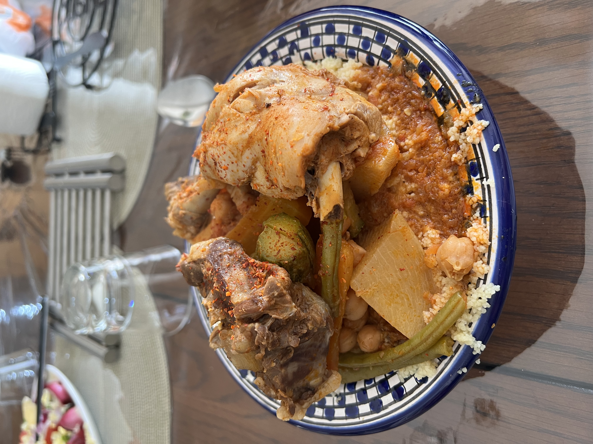

Couscous
Agerian
Algerian couscous, is a North African dish that typically consists of semolina granules. There are several regional
variations of Algerian couscous, and the specific ingredients and preparation methods can vary depending
on the area and the preferences of the cook.

Ingredients
- 1.5 cup Couscous
- 4 Chicken Legs
- 2 Medium Baking Potatoes
- 1 Large Carrot
- 1 Large Courgette
- 1 White Onion
- 2 Big Ripe Tomatoes
- Small Bunch Parsley Steams with Leaves
- 1 cup Chickpeas in Water
Spices for sauce
- 1 tbs Butter
- 1 tsp Ground Safran
- 1 tsp Ground Ginger
- 1 tsp Ground Turmeric
- 1 tsp Salt
- 0.5 tsp Pepper
- 1 tbs Tomatoe Puree
Steps:
- Wash and clean chicken legs. Place a large pot on medium heat and melt butter. Add Chicken legs and then chopped onion
- Add the Safran, ground ginger, turmeric, salt and pepper
- Cook for 10 min, flipping them over half way through
- Next cut tomatoes in half and shred on large hols of the greater. Leave the skin behind. Add to the pot with drained chickpeas and parsley. Cover with hot water and cook for 20 min
- Meanwhile prep your vegetables. Peal potatoes and carrot. Cut into quarters, remove core of the carrot. We will use courgette later
- Place the couscous in a flat shallow dish, add water, 0.5 tsp of salt and 1tbs of olive oil. Mix it with your fingers. You want to make sure all the grains are nicely coated. Leave covered for 10 min
- Transfer potatoes and carrots into the pot with chicken and boil for another 20 min or until half way cooked
- Meanwhile pour boiling water into the steamer. If couscous is ready place into one tier of the steamer. Wait for the steam to comethrough the couscous, then cover it with the lid. Cook for 15 min
- When the vegetables are starting to ready inthe pot with chicken, add the courgette cut into quarters. Cook for another 10 min
- After 15 minutes, transfer your couscous back into the shallow dish and give it a mix with a fork to separate all the lumps. Add half cup of water and mix properly. Make sure it is nice and moist. If you feelit a bit dry, add gradually 1 tbs of water at the time.
- Transfer back to the steamer, wait for the steam, cover and cook for another 15 min. Once it’s done, put it back into the shallow dish and mix with 1 tbs of butter. Add salt to taste
- Serve couscous in a deep-dish plates, add chickenand veggies on top. Pour as much sauce as you like. Sprinkle some cinnamon and dig in!